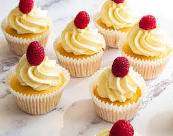

Cupcakes

INGREDIENTS(2 SERVINGS)
->2 and 1/2 tablespoon flour
->2 and 1/4 tablespoon butter
->1/2 egg
->1 and 1/2 tablespoon milk
->1/4 teaspoon baking powder
->2 and 1/4 tablespoon caster sugar
->1 drops vanilla essence
For Toppings
->2 and 1/4 tablespoon Whipping cream
->1/4 handful Mint Leaves
->3 tablespoon strawberry
-> 3/4 drops vanilla essence
Step 1:
In a bowl, sieve flour and baking powder. Keep aside.
Step 2:
In another bowl, whisk eggs, butter and sugar till light and fluffy.
Step 3:
Mix the flour in the above mixture alternatively with milk. Now add vanilla essence and mix well.
Step 4:
Fill the batter evenly into the silicon cupcake moulds.
Step 5:
In a pre-heated oven (180 degrees), place the cupcakes and bake until the top is golden brown (10-15 minutes) or when the toothpick comes out clean once pierced.
Step 6:
Once done, take out the cupcakes on a wire tray and let it cool.
Step 7:
For the icing, whisk the cream till peaks are formed. Divide this into three equal portions.
Step 8:
To one, add mint. To the other, add strawberry and to the third, add vanilla essence.
Step 9:
Put them into icing cones and ice the cupcakes with different flavours.